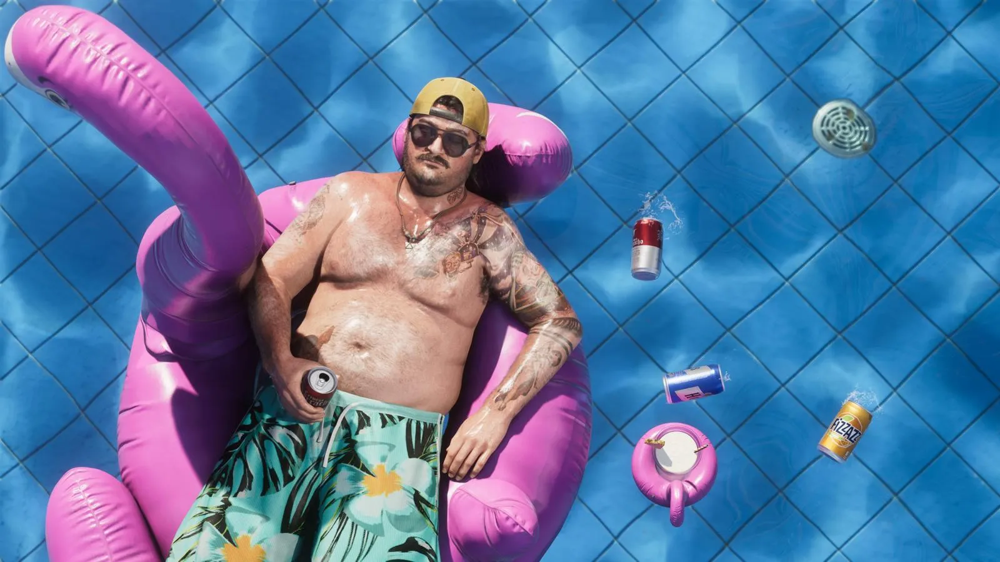

Recalibration: прохождение миссии GTA 6
Опубликовано:

Коротко
- Обычный вечер у Кэла: пиво, рыбалка, гриль. Но это последняя спокойная миссия первой главы — после неё свободной игры не будет до самой второй главы. Сохранитесь и положите деньги на счёт.
- Глава 1, миссия 19 из 22. Играем за: Джейсон.
- Награда: нет.
Миссия коротко
| Глава | 1. Just Like Paradise |
| Номер в сюжете | 19 |
| Играем за | Джейсон |
| Кто даёт | Лусия |
| Где начинается | дом Джейсона → дом Кэла, Ки-Ленто |
| Условие | звонок Лусии после 18-й миссии |
| Награда | нет |
| Переиграть | нельзя — сохраняйтесь вручную |
Прохождение по шагам
- Купите упаковку пива для Кэла в отмеченном винном магазине: возьмите любую из холодильника — оплата спишется сразу.
- Езжайте к Кэлу — он на шезлонге за домом у воды.
- Плывите на рыбалку — около двух минут на лодке до метки.
- Ловите рыбу. Заброс — L2 + R2 (LT + RT). Крутите правый стик по часовой стрелке и при поклёвке жмите R2 (RT). Левый стик — в сторону, противоположную движению рыбы. Затем быстро крутите правый стик, чтобы вытащить.
- Вернитесь к причалу Кэла.
- Пожарьте рыбу на гриле справа от Кэла: переворачивайте три рыбы, пока обе стороны не прожарятся.
- Догоните Лусию — она уходит к фасаду дома, — и отвезите её домой.
Советы
- Точка невозврата. После этой миссии до второй главы идут только сюжетные задания, а за Джейсона вы долго не поиграете.
- Отдельное сохранение. Сделайте ручное сохранение и больше его не перезаписывайте.
- Деньги — на сбережения. Положите на Family Savings хотя бы $5 000: все наличные с собой пропадут.
- Дом на Ки-Ленто будет потерян навсегда.
- Рыбалка с Кэлом позже даёт трофей Baited My Tackle — обыграть его в рыболовном испытании.
Что можно пропустить
Важно до старта: всё, что хотели сделать на Ки-Ленто (сокровища Кентона, рыбалка, точки Kingfishers), временно станет недоступно.
Частые вопросы
Что сделать перед Recalibration?
Ручное сохранение, перевод денег на Family Savings (минимум $5 000) и все дела на Ки-Ленто: наличные и дом будут потеряны.
Как ловить рыбу в GTA 6?
L2 + R2 — заброс, правый стик по часовой и R2 при поклёвке, левый стик против движения рыбы, затем быстро крутить правый стик.
Источники: PowerPyx, «GTA 6 Recalibration (Talk to Lucia)» и «Tourist Trap», 19.11.2026; PC Gamer, «GTA 6 mission list», 19.11.2026. Кнопки указаны для PS5, в скобках — Xbox. Названия миссий — как в английской версии игры.